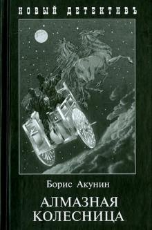

«Тёмная сторона» – это не метафора, а совершенно конкретное место, изнанка реальности. Тёмная сторона есть у любого города, деревни, леса и даже моря. Мудрецы,...
#1 Тёмная сторона
1997, Фрай Макс
«Алмазная колесница» издана двухтомником, причем оба тома помещаются под одной обложкой.В первой книге «Ловец стрекоз» читатель следит за двумя героями – ...
#2 Алмазная колесница
2003, Акунин Борис
